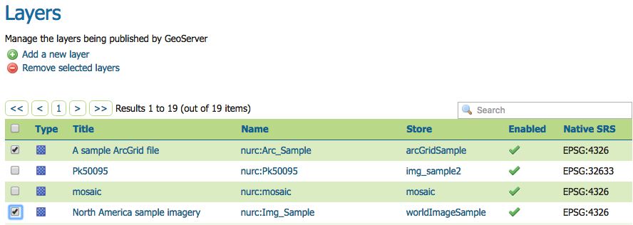
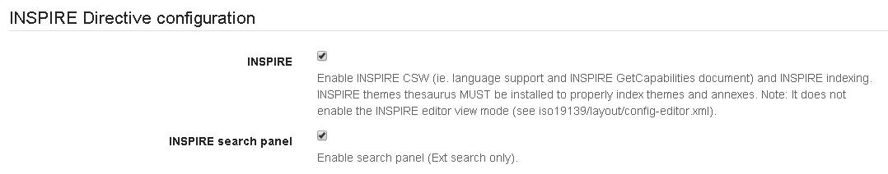
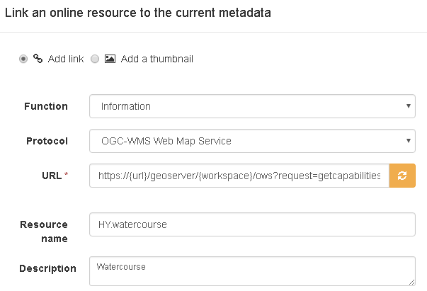

Учебное пособие по настройке службы просмотра INSPIRE с помощью GeoNetwork и GeoServer¶
В этом учебном пособии показано, как можно настроить комбинацию GeoServer и GeoNetwork для предоставления услуг просмотра в соответствии с техническими рекомендациями для услуг просмотра.<http://inspire.ec.europa.eu/documents/Network_Services/TechnicalGuidance_ViewServices_v3.1.pdf> `_.
Обратите внимание, что технические рекомендации разрешают как `WMS<http://www.opengeospatial.org/standards/wms> `_, а также `WMTS<http://www.opengeospatial.org/standards/wmts> `_. Выберите тип службы, который соответствует вашему варианту использования, или оба варианта. WMTS, как правило, предпочтительнее для больших наборов данных (облегчает выполнение требований к качеству обслуживания). WMS, как правило, является лучшим выбором для наборов данных с высокой частотой обновления. GeoServer улучшил поддержку WMTS в последних версиях (2.10+). Более старые версии не могут использоваться для предоставления WMTS в соответствии с техническими рекомендациями INSPIRE.
Геосервер¶
Загрузите и установите расширение GeoServer INSPIRE, как описано в разделе «Установка расширения inspire».<http://docs.geoserver.org/latest/en/user/extensions/inspire/installing.html> `_
Создайте рабочее пространство, из которого будут размещаться слои INSPIRE. В свойствах рабочей области активируйте «Настройки» и задайте выбранные услуги (WMS/WMTS). Ограничьте количество проекций до необходимого количества проекций INSPIRE. Сохранение всех проекций геосервера по умолчанию вызовет серьезные проблемы с производительностью.

В настройках WMS/WMTS выберите рабочую область INSPIRE и заполните форму (пока оставьте URL-адрес метаданных службы пустым), как описано в разделе «Использование расширения inspire».<http://docs.geoserver.org/latest/en/user/extensions/inspire/using.html#inspire-using> `_. Если рабочее пространство INSPIRE не находится в раскрывающемся списке, вернитесь к предыдущему шагу и убедитесь, что «Настройки» активированы для рабочего пространства. Если поля INSPIRE не отображаются, убедитесь, что расширение INSPIRE установлено правильно.

Создайте слои, как описано в разделе «Управление слоями».<http://docs.geoserver.org/latest/en/user/data/webadmin/layers.html> `_
Геосеть¶
При развертывании Geonetwork убедитесь, что тезаурусы GEMET загружены, и активируйте редактор INSPIRE, как описано в документации `inspire. <http://geonetwork-opensource.org/manuals/trunk/eng/users/administrator-guide/configuring-the-catalog/inspire-configuration.html> `_.
В Admin > Settings активируйте расширение INSPIRE.
Для каждого набора данных, который вы собираетесь опубликовать, создайте запись iso19115, используя шаблон INSPIRE. Свяжите каждую запись со службой просмотра, созданной на геосервере: например, https://{url}/geoserver/{workspace}/ows?request=getcapabilities&service=wms&version=1.3.0.
Убедитесь, что метаданные содержат тот же gmd:code (и полномочия), что и используемые в WMS getcapabilities.
Создайте сборщик OGC, способный извлекать метаданные для записи службы (iso19119) из WM(T)S. Запустите харвестер и запишите идентификатор метаданных созданного сервиса.
Вернуться к Геосерверу¶
Для каждого слоя добавьте ссылку на метаданные типа application/vnd.ogc.csw.GetRecordByIdResponse_xml.
В рабочей области WM(T)S-settings > INSPIRE добавьте ссылку на метаданные службы.
Проверить реализацию¶
Если вы используете указанную выше настройку онлайн, вы можете использовать валидатор Pilot JRC INSPIRE.<http://inspire-geoportal.ec.europa.eu/validator2/> `_. Если описанная выше установка выполняется локально, вы можете использовать `Esdin Test Framework<https://github.com/Geonovum/etf-test-projects-inspire> `_ для проверки установки INSPIRE.

Частое выполнение теста во время разработки помогает выявить проблемы на ранней стадии.
Известные вопросы¶
Существует известная проблема с возможностями привязки метаданных. Валидатору JRC требуется gmd:RS_Identifier внутри gmd:code с раздельным моделированием авторитета и идентификатора набора данных. Тем не менее, технические рекомендации предполагают gmd:MD_Identifier внутри gmd:code, тогда полномочия могут быть включены в качестве префикса, например, <gmd:MD_Identifier>{authority}#{uuid}< gmd:MD_Identifier>